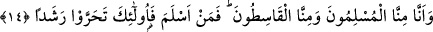
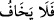
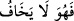
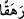
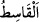
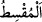

edilmesinden korkar.
“Doğrusu biz, o hidâyeti” en doğru yola ileten Kur’an’ı “işitince” hiç tereddüd ve
tehir etmeden “ona îman ettik. Kim Rabbine”, O’nun indirmiş olduğu hidâyete “îman
ederse, artık ne bir eksikliğe”; mükâfatta bir eksikliğe “uğratılmasından ne de
haksızlık edilmesinden korkar.”
“ ifâdesi, “ takdirindedir. Şu hâlde bu takdire göre cümle mübtedâ
ya da haber olur. Bu sebeple başına “fa” harfi gelmiştir. Eğer böyle olmasaydı fa’sız
olarak “lâ yehafu” denmesi gerekecekti. Fiilin merfû olmasının ve başına “fâ” harfinin
getirilmesinin vâcip oluşu, “müminin âhirette kesin biçimde kurtuluşa ereceğine ve
kurtuluşun insanlar içinde sâdece ona has olduğuna” işâret etmek içindir.
“/Rehekan” kelimesi ile âyete şöyle bir mânâ katılmış oluyor: Rabbine îman eden
kişi, kendisine herhangi bir zilletin gelmesinden de korkmaz veya kim Rabbine îman
ederse ne sevabının eksikliğe uğratılmasından ne de zulme ve haksızlığa uğrayacağından
korkar. Kişi hakkının eksilmeyeceğinden ve herhangi bir zulme uğramayacağından
korkmazsa onların karşılığını alamayacağından da korkmaz. Bu âyet-i kerîme işâret
ediyor ki Cenâb-ı Hakk’a îman eden kişinin, zulümden kaçınması lâzımdır. Nitekim
Peygamber (s.a.) Efendimiz bu konuda şöyle buyurur: “Mümin, insanların can ve
malları konusunda kendisine güvendiği kimsedir.” [141] Nitekim Vâsıti’nin şu sözü çok
anlamlıdır: “Îmânın hakîkati başkalarına güven verir. Her kim başkalarının şüphe
ederek korktuğu bir kişi ise o kişi îmânın hakîkatine erememiş demektir.”
14. İçimizde, (Allah’a) teslimiyet gösterenler de var, hak yoldan sapanlar da var.
Teslimiyet gösteren kimseler, doğru yolu arayanlardır.
“İçimizde, (Allah’a)” Kur’an’ı dinledikten sonra “teslîmiyet gösterenler de”
müslüman olanlar da “var, hak yoldan sapanlar da var.” Yâni îman ve itâat demek
olan hak yoldan sapanlar da var.
Hak yoldan sapanlar anlamına gelen “/el-Kâsıt”, zulmeden demektir. Çünkü
zulmeden kimse haktan sapmış demektir. Aynı kökten türeme “/el-Muksıt” ise âdil
demektir. Çünkü muksıt hakka dönmüş demektir. Bu fiil değişik bir kullanıma sâhiptir. “/kasata” dendiğinde zulmetti, hak yoldan ayrıldı anlamına gelirken “/aksata”
dendiğinde âdil oldu, bâtıl yoldan hak yola döndü anlamını ifâde eder. Muâviye’nin
fırkasına yaygın olarak “el-Kâsıt” ismi verilmiştir. Aynı kelime Hz. Ali’ye hitâben bir
hadis-i şerifte yer alır: “Sen nâkisûn, kâsitûn ve mârikûn ile çarpışacaksın.” [142]
Bu kelimelerin ne demek olduğuna gelince “nâkisûn”, Hz. Âişe (r. anhâ) yanında yer
alan ve Hz. Ali’ye karşı çarpışan kimselerdir. Onların “nakisun” ismini almaları bey’atı